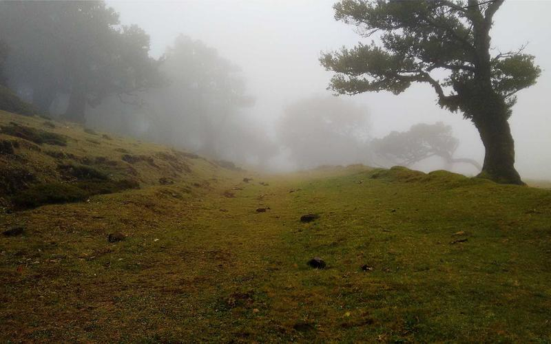
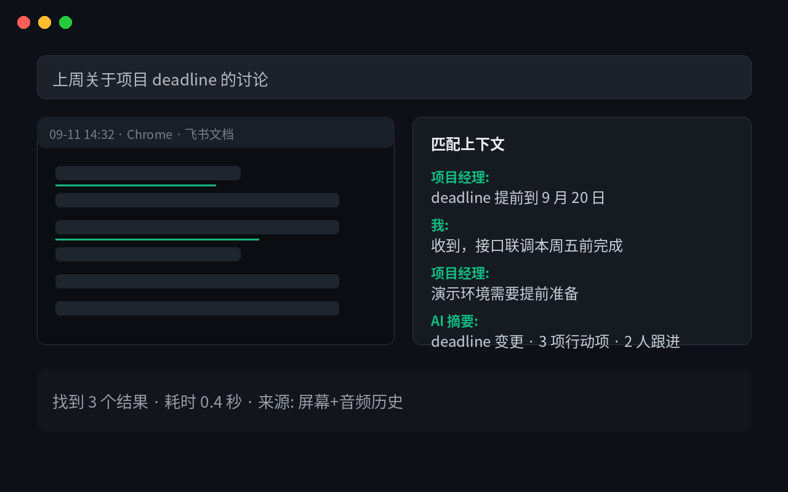
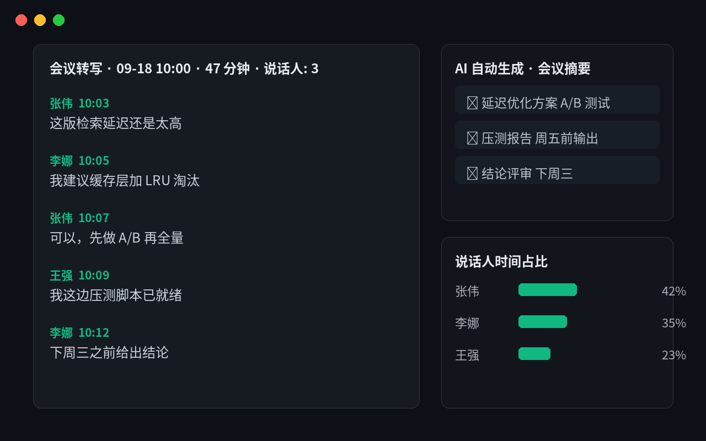
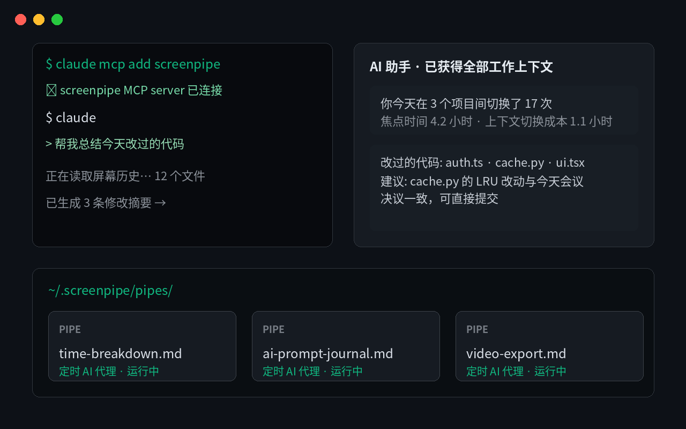

claude mcp add screenpipe 一行命令接入，本地 REST API（localhost:3030）同步可用
| 关键维度 | ScreenPipe | Rewind / Limitless | MS Recall | Granola |
|---|---|---|---|---|
| 源码可审计 | ✓ 开源 | ✗ 闭源 | ✗ 闭源 | ✗ 闭源 |
| 本地转写 | ✓ 本地 Whisper | 部分云端 | ✗ | 云端 |
| 跨平台 | ✓ macOS / Win / Linux | ✗ 仅 macOS | ✗ 仅 Windows | ✗ |
| 插件系统 · 自选模型 | ✓ Pipes + 任意模型 | ✗ | ✗ | ✗ |
localhost:3030 REST API + JS/TS SDK + MCP~/.screenpipe/pipes/，用 prompt 描述任务与触发周期，无需写代码